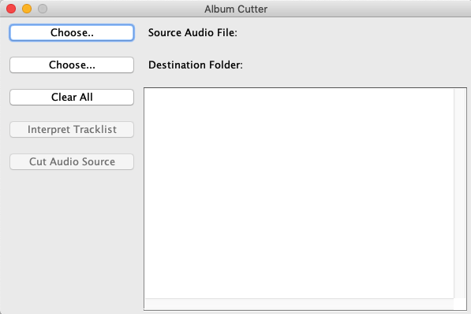

|

|
Album Cutter
Java application to cut full-album-containing wav-files to multiple single-song-containing files
Description:
With this tool, large sound files containing multiple parts can automatically be cut into several single files.
To do so, a track list with timestamps, which are often available, can be inserted in text form.
The track list will then be interpreted and can afterwards be adjusted manually.
The only file format supported yet is wav.
Supported Platforms:
Windows, OS X, Linux (Java required)
Last Update:
28.05.2018
Links:
|